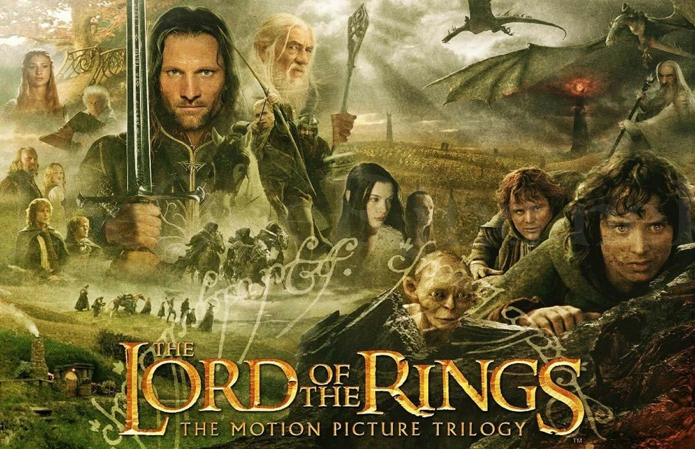
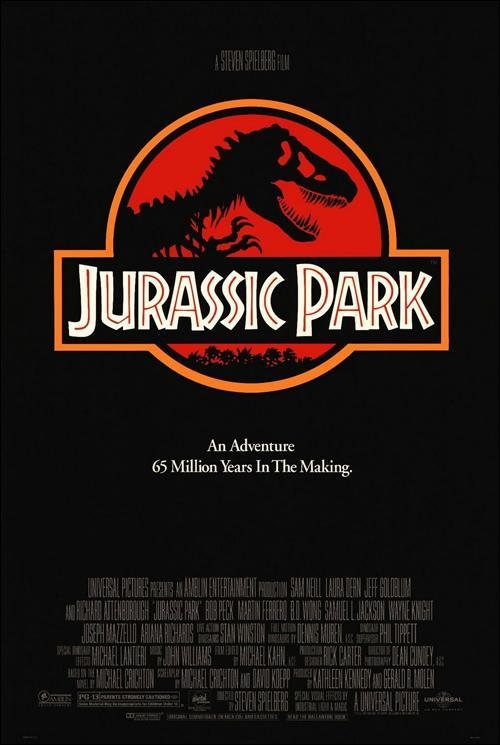

El Señor de los Anillos

Sinopsis
Ambientadas en la Tierra Media, las tres películas siguen al joven
Hobbit Frodo Bolsón mientras él y la Comunidad del Anillo emprenden
una misión para destruir el Anillo Único, con el fin de asegurar la
destrucción del Señor Oscuro Sauron. Pero la Comunidad se disuelve,
y Frodo continúa la misión junto a su leal compañero Sam y el
traicionero Gollum. Mientras tanto, el mago Gandalf y Aragorn,
heredero exiliado al trono de Gondor, se unen y movilizan a los
Pueblos Libres de la Tierra Media en varias batallas que culminan en
la Guerra del Anillo.
La Guerra de los Mundos
Sinopsis
La invasión de la Tierra por los marcianos y la terrible batalla que
tiene que librar la humanidad para sobrevivir se centra en una
familia americana. Ray Ferrier (Tom Cruise) es un estibador
divorciado y un padre nada modélico. Estando sus hijos de visita en
su casa, estalla una tremenda e inesperada tormenta eléctrica. Unos
momentos después, Ray es testigo de un acontecimiento extraordinario
que cambiará su vida y la de los suyos para siempre: una enorme
máquina de tres patas emerge del suelo y lo arrasa todo.
Parque Jurasico

Sinopsis
El multimillonario John Hammond consigue hacer realidad su sueño de
clonar dinosaurios del Jurásico y crear con ellos un parque temático
en una isla remota. Antes de abrirlo al público, invita a una pareja
de eminentes científicos y a un matemático para que comprueben la
viabilidad del proyecto. Pero las medidas de seguridad del parque no
prevén el instinto de supervivencia de la madre naturaleza ni la
codicia humana.
Deadpool y Wolverine

Sinopsis
Un apático Wade Wilson se afana en la vida civil tras dejar atrás
sus días como Deadpool, un mercenario moralmente flexible. Pero
cuando su mundo natal se enfrenta a una amenaza existencial, Wade
debe volver a vestirse a regañadientes con un Wolverine aún más
reacio a ayudar.
El Fin de los Tiempos
Sinopsis
En unos minutos, en las principales ciudades de Estados Unidos, se
producen unas extrañas y escalofriantes muertes que escapan a toda
explicación. Elliot Moore (Wahlberg), un profesor de ciencias de
Filadelfia, intentando eludir este misterioso y letal fenómeno, se
dirige a Pensilvania con su mujer (Deschanel), su amigo Julian
(Leguizamo) y la hija de este; sin embargo, pronto queda de
manifiesto que ningún lugar es seguro. Pero, de repente, Elliot
empieza a vislumbrar la verdadera naturaleza de lo que está
ocurriendo